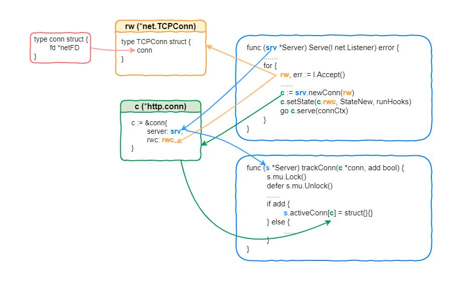

Golang-浅析net库http请求处理流程
Golang-浅析net库http请求处理流程
主要记录HTTP请求在net包中经历的关键节点，基于go1.19.1
学习net包中使用 预分配内存、sync.Pool 提升性能技巧，以及其他优秀的设计思想。
1. 管理TCP连接
什么epoll、三次握手这些八股文不提了，这里从 Serve() 开始记录；
在 net/http/server.go 的 func (srv *Server) Serve(l net.Listener) error 方法中，关注以下流程：

l.Accept()得到一个*net.TCPConn类型的指针 rw
1 | |
这个*net.TCPConn是个什么东西？可以稍稍看看里面
- net/tcpsock.go
1
2
3
4
5// TCPConn is an implementation of the Conn interface for TCP network
// connections.
type TCPConn struct {
conn
}- 内部嵌套conn，net/net.go
1
2
3type conn struct {
fd *netFD // <--找到这个命名就知道对了
}- net/fd_posix.go
1
2
3
4
5
6
7
8
9
10
11
12// Network file descriptor.
type netFD struct {
pfd poll.FD // <--找到稍微根源的东西了，这里先不深入了
// immutable until Close
family int
sotype int
isConnected bool // handshake completed or use of association with peer
net string
laddr Addr
raddr Addr
}在
srv.newConn(rw)中包装并返回server.conn对象指针（下面简称 conn），其中 server.conn.rwc 指向这个 rw
1 | |
- 经过
c.setState()会将 rw 记录在server.activeConn中
1 | |
- 并且 conn 会更新当前状态，这个状态使用一个 原子变量 存储保证一致性
1 | |
最后这个 conn 带着一个”有故事的”上下文，在全新的goroutine中执行；
- 这个上下文的前置处理有点东西，有很强的扩展性，简单记录一下
1
2
3
4
5
6
7
8
9
10
11
12
13
14
15
16
17
18
19
20
21
22
23
24
25
26
27
28
29
30
31
32func (srv *Server) Serve(l net.Listener) error {
......
origListener := l
......
baseCtx := context.Background() // 先获取一个平平无奇的上下文
if srv.BaseContext != nil {
// 这里可以利用srv指定的基础上下文获取方法替代原始baseCtx，是指Server层级的Context处理过程。
// 这里的l可以有很多种实例，这里是tcp，也可以是udp、uds等。
baseCtx = srv.BaseContext(origListener)
if baseCtx == nil {
panic("BaseContext returned a nil context")
}
}
......
// 这里使用一个*valueCtx将baseCtx包裹在内，并使用ServerContextKey与srv的指针存储kv，方便在任何带有该上下文的方法中得到srv，可以说非常灵活。
ctx := context.WithValue(baseCtx, ServerContextKey, srv)
for {
connCtx := ctx
// 这里利用srv指定Connect层级的Context处理过程，与上文的BaseContext相互照应，这种分离层级策略使得ctx的特殊处理更为细致与明确。
// 方便针对各种http框架的context在此处进行特殊业务处理。
if cc := srv.ConnContext; cc != nil {
connCtx = cc(connCtx, rw)
if connCtx == nil {
panic("ConnContext returned nil")
}
}
......
c := srv.newConn(rw)
......
go c.serve(connCtx) // 最终ctx被带人到下一步的请求处理中
}
}
2. 读取请求内容
2.1. 主流程
- 从
func (c *conn) serve(ctx context.Context)进去主要关注以下流程：
1 | |
2.2. 请求数据解析/存储流程
申请存储数据的内存缓冲区
- net/http/server.go
1
2
3
4
5
6
7
8
9
10func newBufioReader(r io.Reader) *bufio.Reader {
// 这里可以明白，这个内存首先尝试在一个sync.Pool中获取，说明后面逻辑中有将资源置入缓冲池里复用，避免频繁GC
// 在conn.close()和conn.closeWriteAndWait()都会将首次申请的缓冲区内存Put到池中，等待下一次连接重用
if v := bufioReaderPool.Get(); v != nil {
br := v.(*bufio.Reader)
br.Reset(r)
return br
}
return bufio.NewReader(r) // <--首次处理一个连接的请求时没有缓冲池，会真正申请一块连续内存
}- bufio/bufio.go
1
2
3
4
5
6
7
8
9
10
11
12
13
14
15
16
17
18
19
20
21
22
23const (
defaultBufSize = 4096
)
func NewReader(rd io.Reader) *Reader {
return NewReaderSize(rd, defaultBufSize) // <--这里会预分配一块4KB大小的内存
}
func NewReaderSize(rd io.Reader, size int) *Reader {
......
r := new(Reader)
r.reset(make([]byte, size), rd)
return r
}
func (b *Reader) reset(buf []byte, r io.Reader) {
*b = Reader{ // <--最终创建一个*bufio.Reader保存预分配的内存
buf: buf, // 4KB空白内存
rd: r, // *connReader
lastByte: -1,
lastRuneSize: -1,
}
}读取http-body数据到缓存区
- 从连接中读取请求数据，以及初始化响应
1
2
3
4
5
6
7
8
9
10
11
12
13
14
15func (c *conn) readRequest(ctx context.Context) (w *response, err error) {
......
// 真正处理读取连接内容的方法
req, err := readRequest(c.bufr, keepHostHeader)
// 构造resp
w = &response{
conn: c,
cancelCtx: cancelCtx,
req: req,
reqBody: req.Body,
......
}
......
return w, nil
}- 解析请求，并构request对象
1
2
3
4
5
6
7
8
9
10
11
12
13
14
15
16
17
18
19
20
21
22
23
24
25
26
27
28
29
30
31
32
33
34
35
36
37
38
39
40
41
42
43
44
45
46
47
48func readRequest(b *bufio.Reader, deleteHostHeader bool) (req *Request, err error) {
// 创建或从缓冲池中获取一个text格式协议的Reader，此时tp中携带了*bufio.Reade-->b，在后续读取数据时将直接对b预申请的4KB缓冲区进行写操作
// 其内部会初始化所有的公共Header(单例模式)，用于后续读取公共Header时知道需要获取哪些Header-Value
tp := newTextprotoReader(b)
req = new(Request)
// First line: GET /index.html HTTP/1.0
var s string
// 利用TextprotoReader读取conn信息，并填充b的4KB缓冲区
if s, err = tp.ReadLine(); err != nil {
return nil, err
}
// TextprotoReader的善后处理
defer func() {
putTextprotoReader(tp) // 将资源Put到缓冲池中等待下一个报文复用
if err == io.EOF {
err = io.ErrUnexpectedEOF
}
}()
......
// 这里主要是解析URL上的请求参数，没啥好说的，比较简单，参数存储在req.URL.RawQuery中
rawurl := req.RequestURI
if req.ProtoMajor, req.ProtoMinor, ok = ParseHTTPVersion(req.Proto); !ok {
return nil, badStringError("malformed HTTP version", req.Proto)
}
if req.URL, err = url.ParseRequestURI(rawurl); err != nil {
return nil, err
}
......
// 这里获取newTextprotoReader()中初始化的所有Header-Key对用的Header-Value，返回KV接口的Header信息
mimeHeader, err := tp.ReadMIMEHeader()
if err != nil {
return nil, err
}
req.Header = Header(mimeHeader)
......
// 对于Body.len > 0的请求，将b中4BK缓冲区的数据交给req.Body，这里交付的是指针对象，不存在深拷贝
// 并且尽可能通过读取Header: Content-Length得知真实Body内容大小，对b进行二次封装-->io.LimitReader，记录有效内容字节数
// 后续可以通过字节数直接获取有效内容
// 对于Body.len == 0的请求，直接赋值 NoBody: struct{} 给到req.Body
err = readTransfer(req, b)
......
return req, nil
}
Golang-浅析net库http请求处理流程
https://lamber92.github.io/2023/03/07/golang/http_request/